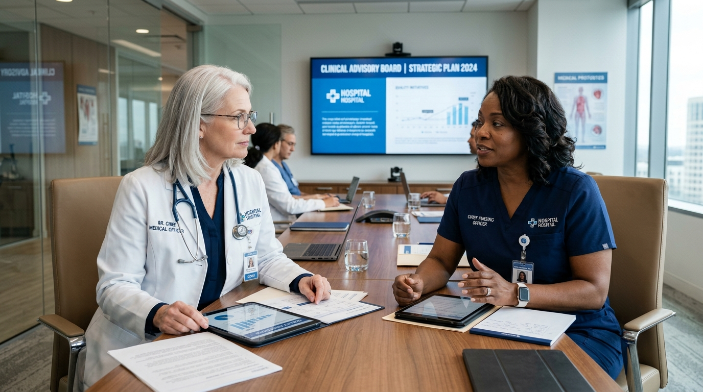

Architecting a Safer, More Dignified Home Healthcare Standard
Founded in 2011 by intensive care physicians and nursing directors, CareTrust was created to solve a singular crisis: patients recovering from critical illness had nowhere safe to go when discharged. We brought the hospital ICU into the sanctuary of home.

Executive Medical Directorate
CareTrust is strictly directed by board-certified physicians, doctors of nursing practice, and clinical pharmacologists.
Dr. Evelyn Vance, MD
22 years directing hospital intensive care and post-acute transitional medicine. Oversees clinical protocols and quality assurance boards.
Marcus Thorne, DNP, RN
Leads our 650+ field nursing corps. Established CareTrust's zero-infection sterile IV infusion protocol and simulation lab training.
Dr. Priya Patel, PharmD
Directs our automated medication reconciliation network to prevent harmful drug-drug interactions in poly-pharmacy geriatric patients.
Sarah Jenkins, MSW
Specializes in family emotional caregiver burden, palliative transition guidance, and connecting families to community subsidies.
15 Years of Pushing In-Home Care Forward
From a humble 4-clinician hospice response team to a national benchmark in home-based intensive care.
Founded in Critical Care
Dr. Evelyn Vance establishes CareTrust to transition long-term ventilator patients safely home, reducing hospital-acquired secondary infections.
Mobile Medical Equipment
Expanded into hospital-grade portable equipment rentals, introducing portable invasive ventilators and telemetry vital monitors for home deployment.
Connected Care Gateway
Launched real-time biometric syncing and our encrypted Family Portal, allowing distant adult children to view parent vitals and caregiver shift notes 24/7.
National Gold Seal Leader
Achieved the lowest hospital readmission rate in the sector (0.4%) and expanded network across 18 regional hospital health systems.
Our 4 Pillars of Clinical Governance
How we maintain hospital-level medical standards in private residences across the state.
The 3.8% Clinician Selection Standard
Out of every 100 nursing and aide applicants who apply to CareTrust, fewer than four meet our clinical standards. We require minimum 3 years acute hospital experience, double-blind clinical simulation exams, and mandatory FBI fingerprinting.
Zero-Tolerance Antimicrobial Stewardship
Every clinical field kit contains single-use sterile barrier fields, surgical PPE, and UV-C device sanitizers. Our home catheterization and central line bloodstream infection rate (CLABSI) is 0.00%, outperforming major inpatient hospitals.
Triple-Check Medication Auditing
Every prescription regimen entered into our digital EHR is cross-checked against our pharmacology database by Dr. Priya Patel's team, catching drug conflicts, duplicate classes, and dosage anomalies before the first dose is taken.
Unannounced RN Supervisory Spot Checks
Our Registered Nurse field supervisors conduct random, unannounced in-person audits during active care shifts to verify caregiver punctuality, hygiene standards, patient vitals logging, and medication bubble pack integrity.
Accreditations & Industry Recognitions
We don't merely claim high standards; our care protocols are audited by national healthcare authorities.
The CareTrust Indigent Senior Relief Endowment
Healthcare is a human right. Through our non-profit endowment fund, 5% of all operating profits are directed to subsidize skilled home nursing and palliative hospice comfort for uninsured or low-income seniors facing terminal illness.
Are You a Dedicated Registered Nurse or CNA?
Join an elite medical organization that respects your clinical autonomy, pays industry-leading hourly rates, and never assigns unmanageable patient ratios.